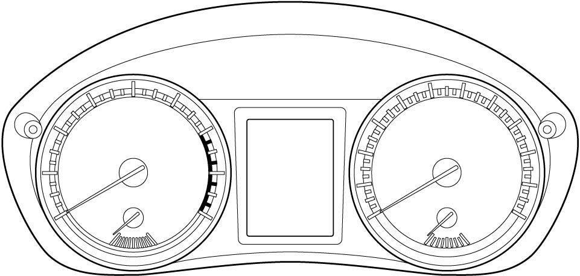

9C
| Combination Meter Description |
•Information display is built into combination meter.
•Warning buzzer is incorporated in the combination meter.
•Fuel gauge data is supplied to the combination meter directly from the fuel level sensor.
•The combination meter is equipped with the oil life monitoring system.

•Warning buzzer is incorporated in the combination meter.
•Fuel gauge data is supplied to the combination meter directly from the fuel level sensor.
•The combination meter is equipped with the oil life monitoring system.

 "Expand image")
Information Display
The information display indicates various items of information including driving range (estimated mileage with remaining fuel), average speed, selector position (A/T model and twin clutch system model), gear position (M/T model), odometer, trip meter, outside air temperature, instantaneous fuel consumption, average fuel consumption, remaining oil life (if equipped), remaining distance for engine oil change (D16AA model), driving mode (4WD model), RBS indicator light and display (RBS model), tire pressure (TPMS model), brightness of instrument panel, direction and distance of an obstacle sensed by the parking sensor. The information display can also indicate the following messages related to the vehicle.
Information display messages
| Message | |
|---|---|
| 4WD MODE UNSELECTABLE AUTO MODE ON | PRESS BRAKE AND CLUTCH TO START |
| 4WD SYSTEM HIGH TEMP 4WD IS OFF | PRESS BRAKE SHIFT TO P TO START |
| CHANGE ENGINE OIL | PUSH START SWITCH |
| CLEAN PARKING SENSORS | RADAR BRAKE SUPPORT FCN TEMPORARILY DISABLED |
| DOOR OPEN | RADAR BRAKE SUPPORT SYS INSPECTION REQUIRED |
| DPF REGENERATING | RADAR BRAKE SUPPORT: NOT ACTIVE BY SENSOR |
| DRIVE TO REGENERATE DPF | REMOVE WATER FROM FUEL |
| GEARSHIFT NOT IN PARK | SERVICE 4WD SYSTEM |
| HIGH TRANSMISSION OIL TEMP | SERVICE BCM SYSTEM |
| HILL HOLD DISABLE | SERVICE ESP SYSTEM |
| ICE POSSIBLE DRIVE WITH CARE | SERVICE PARKING SENSORS |
| IGNITION SWITCH POSITION | SERVICE START SYSTEM |
| INSPECT CRUISE SYSTEM | SERVICE STEERING LOCK SYSTEM |
| KEY FOB LOW BATTERY | SERVICE TPMS |
| KEY FOB NOT DETECTED | TPMS ID NOT REGISTERED |
| LIGHTS ON | TRN. STEERING WHEEL TO RELEASE LOCK |
| LOCK MODE CANNOT BE SET | UNEVEN TIRE SIZE 4WD IS OFF |
| LOW FUEL | WARNING 4WD MODE SWITCH |
| LOW TIRE PRESSURE | WARNING DPF SYSTEM |
| MAINTENANCE MODE ACTIVE | WARNING PRE HEAT SYSTEM |
| NOT LOCKABLE SET TO SNOW MODE FIRST | WARNING WATERINFUEL SYSTEM |
| PLACE KEY FOB ON START SWITCH | |
User customization function
The user customization function is activated when the indicator selector knob at the combination meter is held pushed for more than 3 seconds when the ignition is “ON” and the vehicle is stationary. When activated, the function provides the following settings.
•Distance units
•Fuel economy units
•Language
•Resetting average fuel economy
•Temperature units
•Set sensors
•Clock setting
•Door lock setting
•Foot lights
•Turn signal lights
•Oil change
•Anti-theft
•TPMS
•IS A/C
•Default setting
•Fuel economy units
•Language
•Resetting average fuel economy
•Temperature units
•Set sensors
•Clock setting
•Door lock setting
•Foot lights
•Turn signal lights
•Oil change
•Anti-theft
•TPMS
•IS A/C
•Default setting